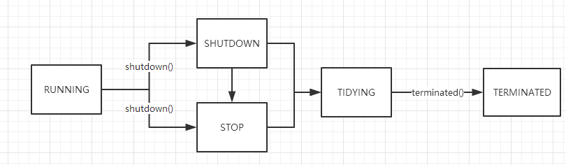

前言
多线程编程中，为每个任务分配一个线程是不现实的，线程创建的开销和资源消耗都是很高的。线程池应运而生，成为我们管理线程的利器。Java 通过Executor接口，提供了一种标准的方法将任务的提交过程和执行过程解耦开来，并用Runnable表示任务。
下面，我们来分析一下 Java 线程池框架的实现ThreadPoolExecutor。
下面的分析基于JDK1.7
生命周期
ThreadPoolExecutor中，使用CAPACITY的高3位来表示运行状态，分别是：
- RUNNING：接收新任务，并且处理任务队列中的任务
- SHUTDOWN：不接收新任务，但是处理任务队列的任务
- STOP：不接收新任务，不处理任务队列，同时中断所有进行中的任务
- TIDYING：所有任务已经被终止，工作线程数量为 0，到达该状态会执行
terminated() - TERMINATED：
terminated()执行完毕

ThreadPoolExecutor中用原子类来表示状态位
private final AtomicInteger ctl = new AtomicInteger(ctlOf(RUNNING, 0));
线程池模型
核心参数
corePoolSize：最小存活的工作线程数量（如果设置allowCoreThreadTimeOut，那么该值为 0）maximumPoolSize：最大的线程数量，受限于CAPACITYkeepAliveTime：对应线程的存活时间，时间单位由TimeUnit指定workQueue：工作队列，存储待执行的任务RejectExecutionHandler：拒绝策略，线程池满后会触发
线程池的最大容量：CAPACITY中的前三位用作标志位，也就是说工作线程的最大容量为(2^29)-1
四种模型
CachedThreadPool：一个可缓存的线程池，如果线程池的当前规模超过了处理需求时，那么将回收空闲的线程，当需求增加时，则可以添加新的线程，线程池的规模不存在任何的限制。FixedThreadPool：一个固定大小的线程池，提交一个任务时就创建一个线程，直到达到线程池的最大数量，这时线程池的大小将不再变化。SingleThreadPool：一个单线程的线程池，它只有一个工作线程来执行任务，可以确保按照任务在队列中的顺序来串行执行，如果这个线程异常结束将创建一个新的线程来执行任务。ScheduledThreadPool：一个固定大小的线程池，并且以延迟或者定时的方式来执行任务，类似于Timer。
执行任务 execute
核心逻辑：
- 当前线程数量 <
corePoolSize，直接开启新的核心线程执行任务addWorker(command, true) 当前线程数量 >=
corePoolSize，且任务加入工作队列成功- 检查线程池当前状态是否处于
RUNNING - 如果否，则拒绝该任务
- 如果是，判断当前线程数量是否为 0，如果为 0，就增加一个工作线程。
- 检查线程池当前状态是否处于
开启普通线程执行任务
addWorker(command, false)，开启失败就拒绝该任务
从上面的分析可以总结出线程池运行的四个阶段：
poolSize < corePoolSize且队列为空，此时会新建线程来处理提交的任务poolSize == corePoolSize，此时提交的任务进入工作队列，工作线程从队列中获取任务执行，此时队列不为空且未满。poolSize == corePoolSize，并且队列已满，此时也会新建线程来处理提交的任务，但是poolSize < maxPoolSizepoolSize == maxPoolSize，并且队列已满，此时会触发拒绝策略
拒绝策略
前面我们提到任务无法执行会被拒绝，RejectedExecutionHandler是处理被拒绝任务的接口。下面是四种拒绝策略。
AbortPolicy：默认策略，终止任务，抛出RejectedExceptionCallerRunsPolicy：在调用者线程执行当前任务，不抛异常DiscardPolicy： 抛弃策略，直接丢弃任务，不抛异常DiscardOldersPolicy：抛弃最老的任务，执行当前任务，不抛异常
线程池中的 Worker
Worker继承了AbstractQueuedSynchronizer和Runnable，前者给Worker提供锁的功能，后者执行工作线程的主要方法runWorker(Worker w)（从任务队列捞任务执行）。Worker 引用存在workers集合里面，用mainLock守护。
private final ReentrantLock mainLock = new ReentrantLock();
private final HashSet<Worker> workers = new HashSet<Worker>();
核心函数 runWorker
下面是简化的逻辑，注意：每个工作线程的run都执行下面的函数
final void runWorker(Worker w) {
Thread wt = Thread.currentThread();
Runnable task = w.firstTask;
w.firstTask = null;
while (task != null || (task = getTask()) != null) {
w.lock();
beforeExecute(wt, task);
task.run();
afterExecute(task, thrown);
w.unlock();
}
processWorkerExit(w, completedAbruptly);
}
- 从
getTask()中获取任务 - 锁住 worker
- 执行
beforeExecute(wt, task)，这是ThreadPoolExecutor提供给子类的扩展方法 - 运行任务，如果该worker有配置了首次任务，则先执行首次任务且只执行一次。
- 执行
afterExecute(task, thrown); - 解锁 worker
- 如果获取到的任务为 null，关闭 worker
获取任务 getTask
线程池内部的任务队列是一个阻塞队列，具体实现在构造时传入。
private final BlockingQueue<Runnable> workQueue;
getTask()从任务队列中获取任务，支持阻塞和超时等待任务，四种情况会导致返回null，让worker关闭。
- 现有的线程数量超过最大线程数量
- 线程池处于
STOP状态 - 线程池处于
SHUTDOWN状态且工作队列为空 - 线程等待任务超时，且线程数量超过保留线程数量
核心逻辑：根据timed在阻塞队列上超时等待或者阻塞等待任务，等待任务超时会导致工作线程被关闭。
timed = allowCoreThreadTimeOut || wc > corePoolSize;
Runnable r = timed ?
workQueue.poll(keepAliveTime, TimeUnit.NANOSECONDS) :
workQueue.take();
在以下两种情况下等待任务会超时：
- 允许核心线程等待超时，即
allowCoreThreadTimeOut(true) - 当前线程是普通线程，此时
wc > corePoolSize
工作队列使用的是BlockingQueue，这里就不展开了，后面再写一篇详细的分析。
总结
ThreadPoolExecutor基于生产者-消费者模式，提交任务的操作相当于生产者，执行任务的线程相当于消费者。Executors提供了四种基于ThreadPoolExecutor构造线程池模型的方法，除此之外，我们还可以直接继承ThreadPoolExecutor，重写beforeExecute和afterExecute方法来定制线程池任务执行过程。- 使用有界队列还是无界队列需要根据具体情况考虑，工作队列的大小和线程的数量也是需要好好考虑的。
- 拒绝策略推荐使用
CallerRunsPolicy，该策略不会抛弃任务，也不会抛出异常，而是将任务回退到调用者线程中执行。